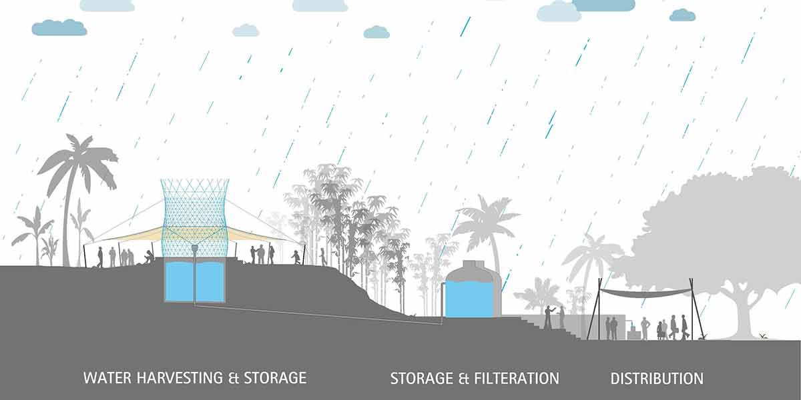
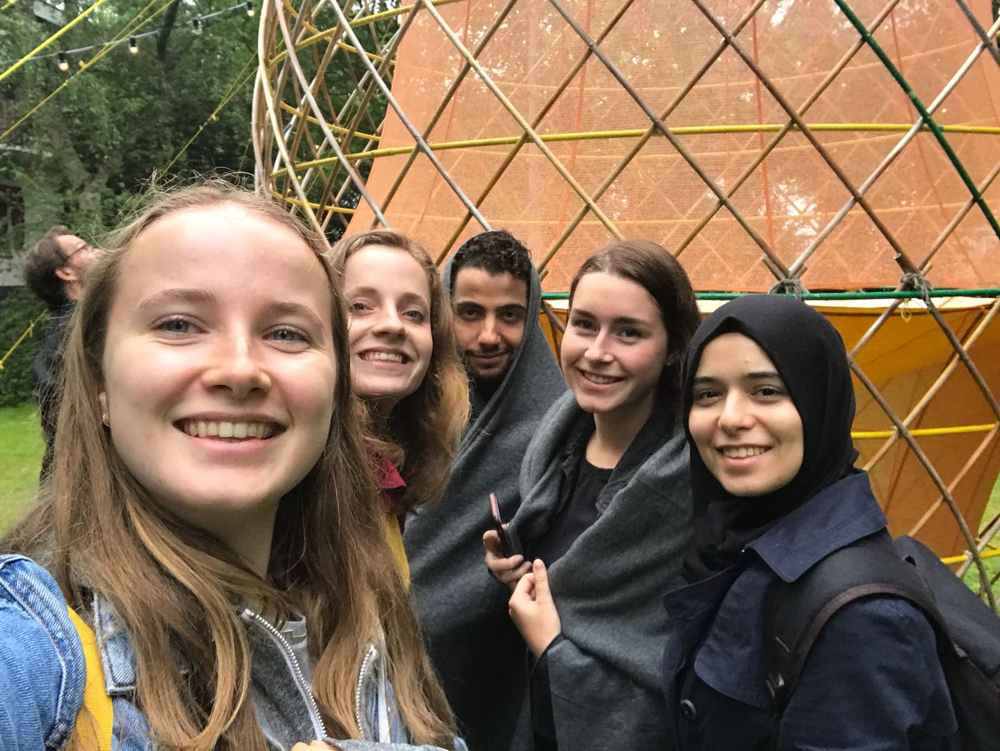

Excursion
Robotanica
Titel
Warka waterMaker
Arturo VittoriWebsite
http://www.warkawater.org/warka-tower/Het project dat ik heb uitgekozen is Warka Water. Dit project wordt geleid door de CEO en Founder Arturo Vittori. Hij werkt in een team met leden uit Italie, India, Libanon, de Verenigde Staten, Verenigd Koninkrijk, Ethiopie, Nigeria, Colombia, Korea en Haiti. Ze hebben al jaren aan dit project gewerkt en er zijn al een aantal versies uitgekomen. Aan dit project hebben ze 3 maanden gewerkt.
De Warka tower is ontworpen om water uit de atmosphere te verzamelen. Dit water kan regen zijn, maar ook mist en dauw. Het werkt alleen bij natuurlijke verschijnselen, zoals condensatie, verdamping, zwaartekracht en vereist geen elektriciteit. Het creeert niet alleen een nieuwe waterbron, maar zorgt ook voor een gemeeshcappelijk plek voor mensen die zich kunnen verzamelen onder de luifel voor onderwijs en openbare bijeenkomsten.
 De technische aspecten hierin, is het filteren van het water. De toren vangt de regen op en wordt afgevoerd naar een tank. Ik de tank wordt het water gefiltert. In het ontwerp dat ik heb gezien tijdens de presentatie zaten helaas geen technische ascpeten. Ik vond het een interessant project, omdat er juist geen elektriciteit en technische aspecten aan toegevoegd hoeven te worden. Dit zorgt er voor dat het goedkoper is om te laten maken en bouwen. Het is gemaakt van duurzame producten en ook nog eens goed voor het mileu. Ik vind het heel belangrijk dat hier ook over nagedacht is, omdat met altijd alleen maar met elektriciteit en schermen bezig zijn. Ik vind dit een mooi voorbeeld van een project die goed is voor het mileu en mensen enorm helpt. Every drop counts
